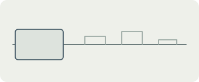

<!doctype html>
<html lang="en">
<meta charset="utf-8">
<meta name="viewport" content="width=device-width, initial-scale=1">
<title>Return timeline — diagram labels</title>
<style>body{margin:0;color:#2C3533;background:#EEF0EA;font:13px/1.3 system-ui,sans-serif}figure{margin:0;width:min(340px,100%);position:relative}img{display:block;width:100%;height:auto}.label{position:absolute;text-align:center;color:#4D5A57}.original{left:7.6%;top:37%;width:24%}.later{left:50%;top:23%;width:43%}</style>
<figure><span class="label original">Original plan</span><span class="label later">Later notes</span></figure>
</html>
